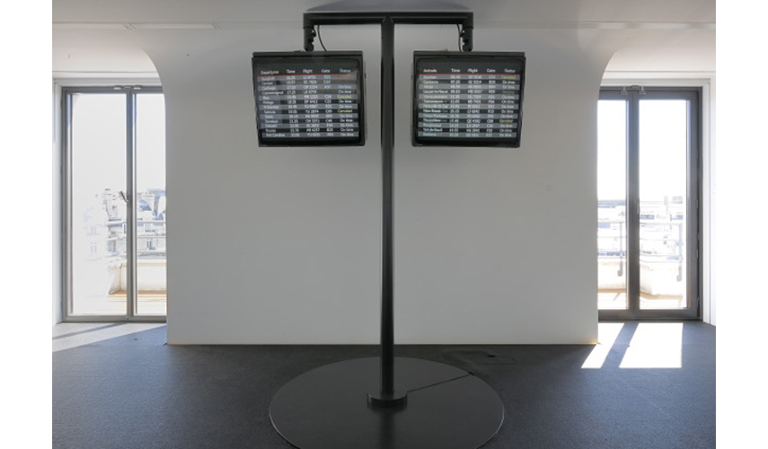

Two information screens, similar to those in airports, relate geographical and temporal movements, side by side. The cities listed on the "departure" screen have all disappeared, destroyed by enemy armies, flooded or abandoned. New towns appear on the "arrival" screen, results of modern city planning that developed over the last sixty years.
